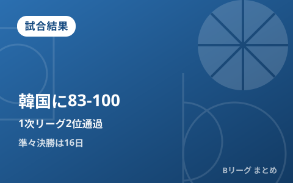

男子日本代表、韓国に83-100で敗れ1次リーグ2位通過 黒川虎徹21得点も及ばず、準々決勝は16日

愛知国際アリーナ（IGアリーナ）で行われている「第20回アジア競技大会（愛知・名古屋2026）」バスケットボール競技、男子1次リーググループA最終戦が9月13日に行われ、男子日本代表は大韓民国に83-100で敗れました。開幕2連勝同士の首位決定戦でしたが、日本は前半互角に渡り合ったものの後半に突き放され、2勝1敗のグループA2位で決勝トーナメント進出。3戦全勝の韓国がグループA首位で通過しました。準々決勝は9月16日に予定されています。
前半は3連続3Pで逆転、しかし後半に失速
試合は互いに譲らない展開となり、日本は第2クォーター終盤に3本連続の3ポイントシュートを沈めて逆転に成功、42-40とリードして前半を折り返しました。しかし第3クォーターで韓国にブザービーターを決められるなど流れを渡すと、そこから守備の粘りを欠いて徐々にリードを許す展開に。第4クォーターで一気に引き離され、最終的に83-100と17点差の敗戦となりました。
黒川虎徹が21得点でチーム最多、カークも19得点12リバウンド
攻撃陣では、黒川虎徹が3ポイントシュート4本を含む21得点を挙げてチーム最多得点をマーク。インサイドではカークが19得点12リバウンドと存在感を発揮しました。若手主体の日本代表は随所で得点力を見せたものの、経験豊富な韓国の前に力負けした格好です。
| 日程 | 対戦相手 | 結果 |
|---|---|---|
| 9月10日（木） | vs インドネシア | 98-53 勝利 |
| 9月11日（金） | vs サウジアラビア | 86-80 勝利 |
| 9月13日（日） | vs 大韓民国 | 83-100 敗戦 |
グループAは韓国が3戦全勝で首位、日本は2位で決勝トーナメントへ
グループAは日本・大韓民国・サウジアラビア・インドネシアの4カ国で総当たりの1次リーグを実施。韓国が3戦全勝でグループ首位、日本が2勝1敗で2位となり、両国とも準々決勝進出を決めています。日本と韓国は2026年7月のFIBAバスケットボールワールドカップ2027アジア地区1次予選でも対戦しており、このときは79-81の接戦で日本が敗れていました。今回も僅差の展開から後半に突き放される、似た構図での連敗となっています。
準々決勝は9月16日、相手は他グループの結果次第
1次リーグを終え、決勝トーナメントの準々決勝は9月16日（水）に10:00、13:00、16:00、19:20の4試合が予定されています。日本の対戦相手は他グループの順位次第で決まる見通しで、組み合わせが判明次第、当サイトでも続報をお届けします。若手主体の日本代表が、この悔しい敗戦をどう次戦に生かすかが注目されます。
Q. 1次リーグで負けても決勝トーナメントに進めるのはなぜ？
A. グループステージは総当たりで上位チームが決勝トーナメントに進む方式のため、1敗しても2位であれば準々決勝に進出できます。順位はトーナメントでの対戦相手や会場に影響するため、首位通過を目指す意味はあります。
出典：バスケットボールキング「アジア大会で白熱の日韓戦…黒川虎徹が21得点も男子日本代表は敗戦、グループ2位で決勝Tへ」／共同通信「日本、韓国に敗れ2位通過 アジア大会、バスケ男子」／日本経済新聞「バスケ男子日本、1次リーグは2位通過 アジア大会」ほか
https://news.yahoo.co.jp/articles/5aa7ea7cdbd653c6a5507830298addb2538211a9
https://news.yahoo.co.jp/articles/7d9ecb461bb22a4f733c1e53d1f9b4eb8649c772
https://www.nikkei.com/article/DGXZQOKC131YN0T10C26A9000000/